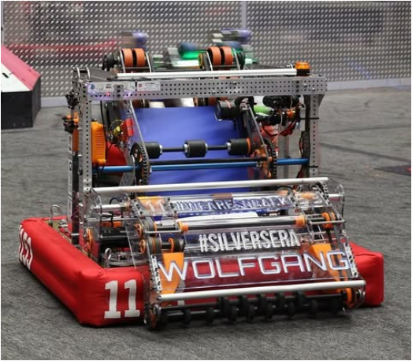

Wolfgang is our 2024 robot. It uses a swerve drive to move omnidirectionally as well as move while turning direction. The intake on the front of the robot is used to collect notes from the ground. It goes over the bumper and rotates back inside the robot to keep it safe when not being used. The note then moves to the shooter, which automatically changes its angle and speed based on how far away it is from the speaker. At the end of the match, the robot uses its two climbing arms to hoist itself on the chain, with the ability to balance with other robots.
Notable Achievements |
|---|
| BSU | Finalist
Innovation in Control Award |
|---|
| North Shore | Finalist |
|---|
| NEDCMP | 4th seed in qualifications
4th seed aliance captain |
|---|
| CMP | Team Sustainablity award |
|---|
